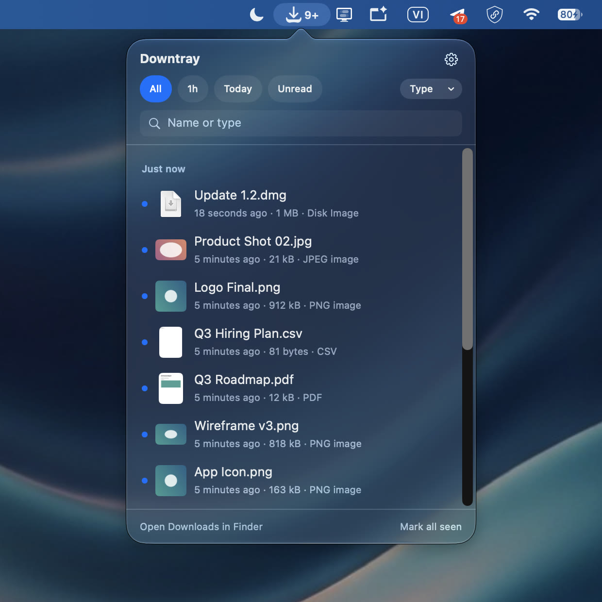
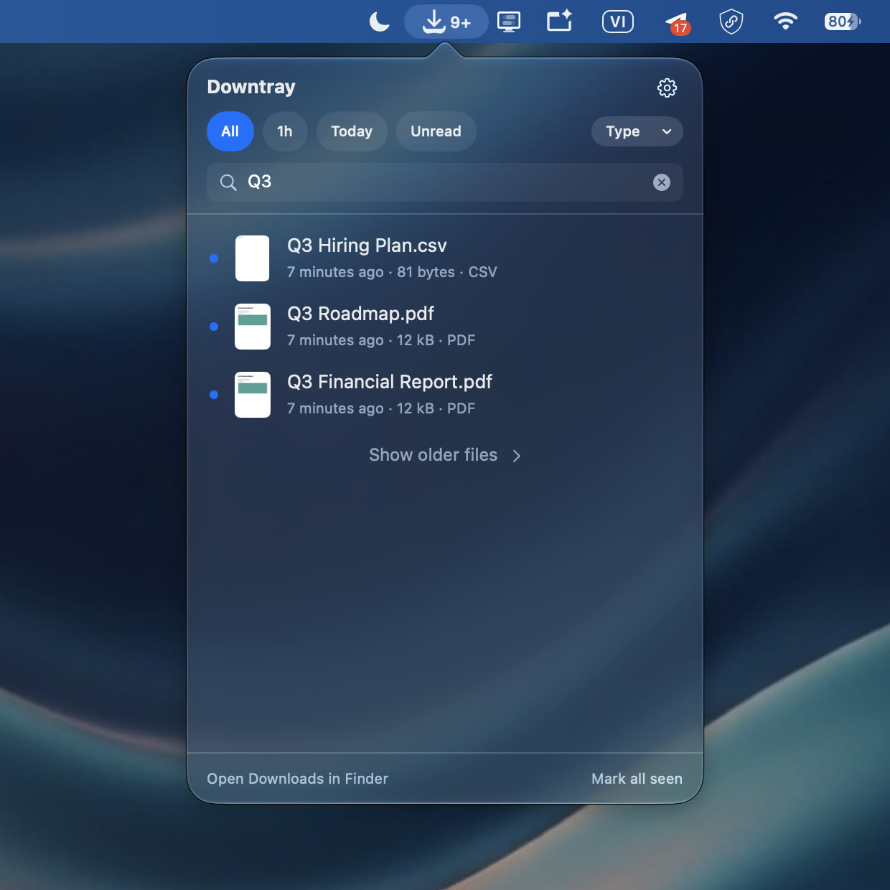
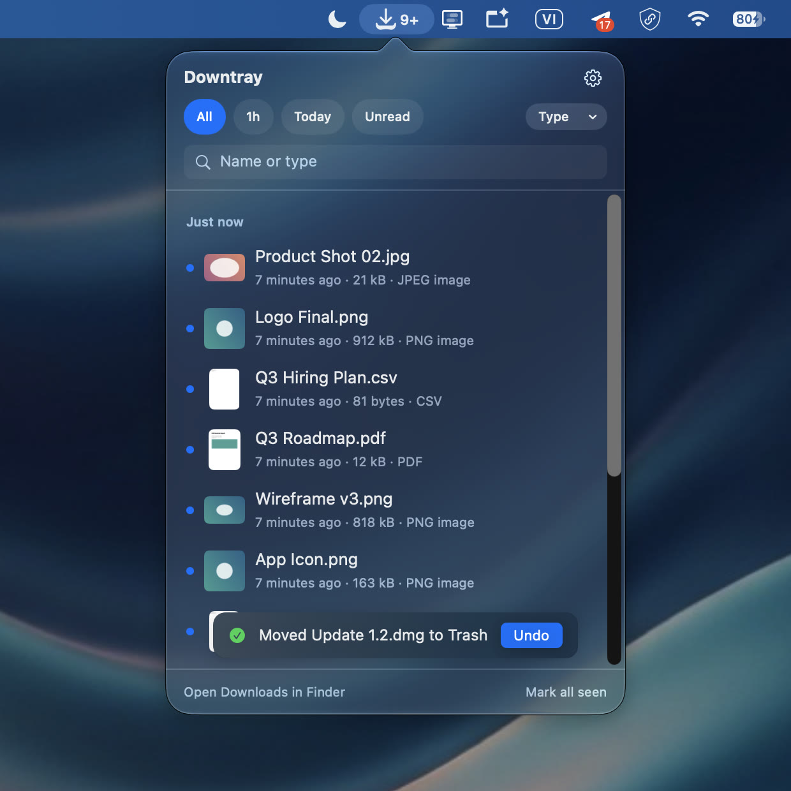
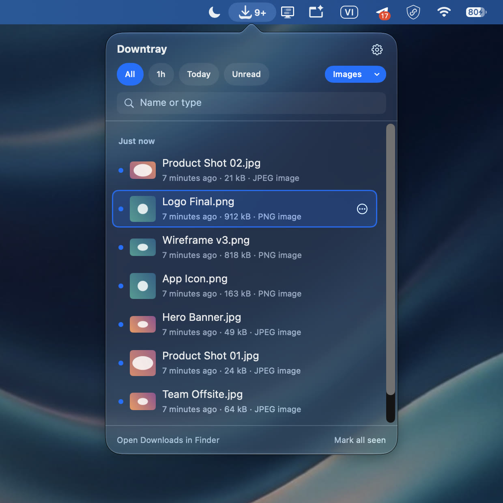
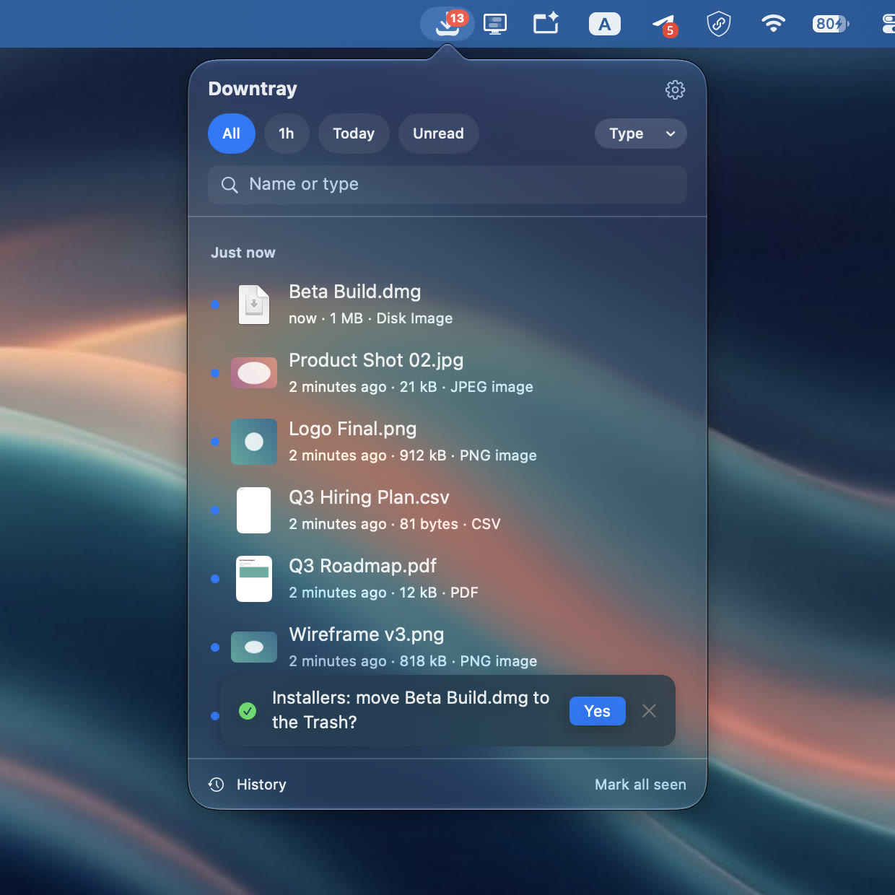
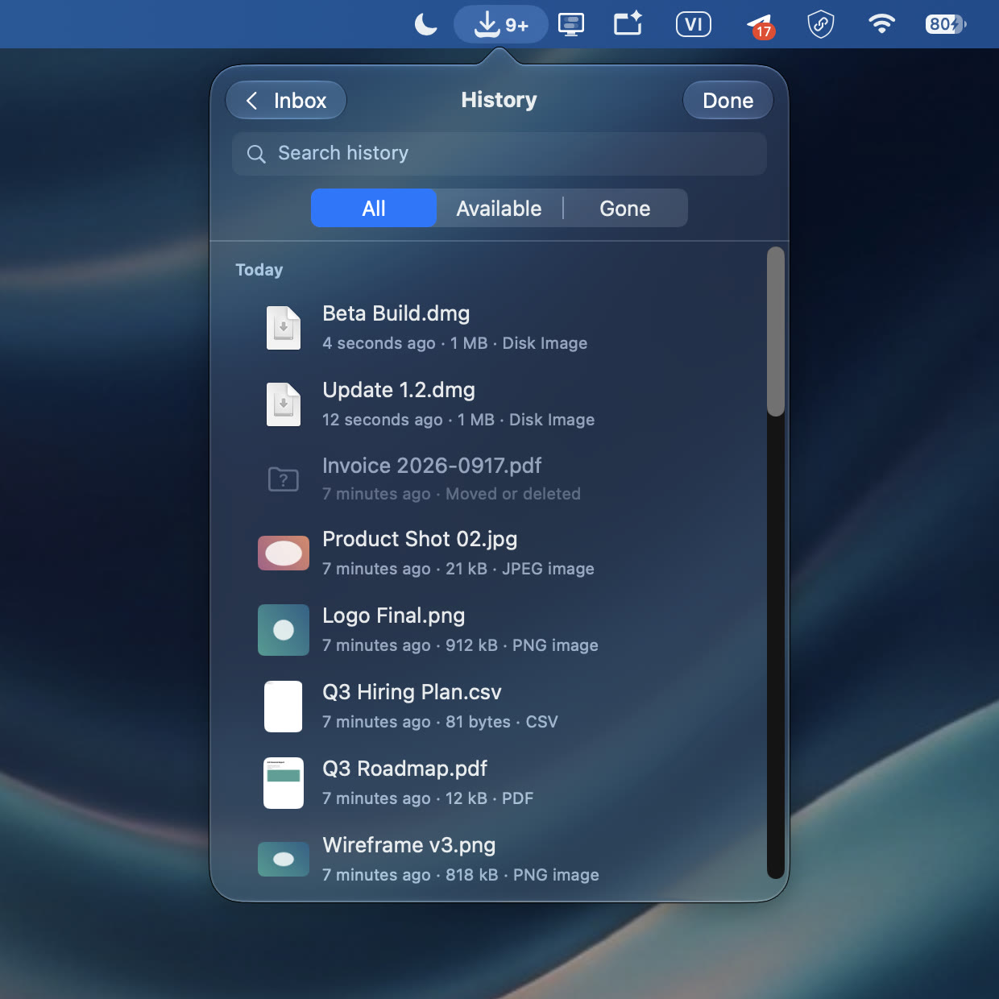
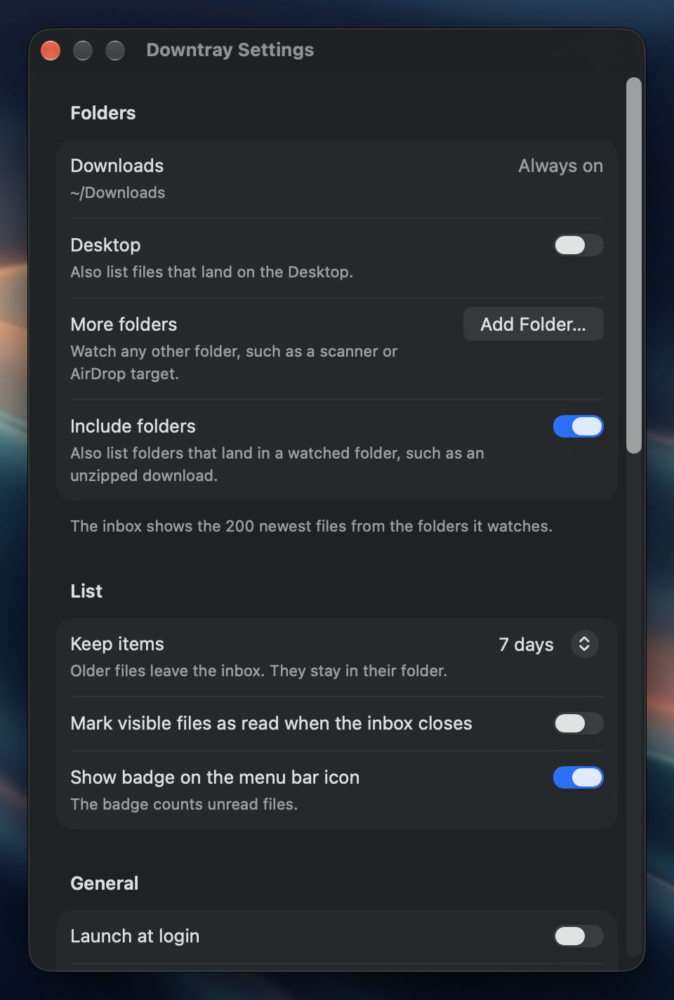

Native by design
Downtray lives in the menu bar and feels like part of macOS. Dark and light mode, Quick Look, drag and drop, the real Trash with undo. No Dock icon, no window to manage.
A menu bar inbox for the files that just landed in Downloads.
See what arrived, deal with it, move on.
Press ⌃⌥D from any app. The newest files are at the top,
with a thumbnail and where each one came from.
Downtray lives in the menu bar and feels like part of macOS. Dark and light mode, Quick Look, drag and drop, the real Trash with undo. No Dock icon, no window to manage.

What just arrived sits at the top, with a Quick Look thumbnail and the site it came from. A badge on the menu bar icon counts what you have not opened yet.
Last hour, today, or unread. Pick a type such as Docs, Images, Media or Archives, or just start typing a name.

↩ opens, Space previews, ⌘R reveals in Finder, ⌘C copies the path, ⌘M moves, ⌘U unzips, ⌫ trashes with undo.

Drag a file straight out of the list into Mail, Slack, a browser upload or any folder. Then mark everything seen and the badge goes back to zero.

Downtray Pro adds the parts for people whose downloads never stop.
Receipts into Receipts, installers to the Trash, screenshots to a folder. Let a rule act on its own, or have it ask first.

Every file that ever landed, even after you moved it. Search by name, see where it went, open it from there.

Watch the Desktop, a scanner folder, an AirDrop target, a shared drive. Anything that receives files can be an inbox.

The inbox keeps 200 files instead of 20. They stay until you clear the list, or for a day, a week or a month if you prefer a tidy inbox.
Global shortcut. Open the inbox with ⌃⌥D from any app, or record your own.
Unread badge. The menu bar icon counts the files you have not opened yet.
Quick Look. Preview any file with Space without leaving the list.
Unzip in place. Expand archives right where they landed, with ⌘U.
Move to. Send a file to a recent folder or pick one in Finder.
Trash with undo. Files go to the real Trash, and one click brings them back.
Copy path. Put the full path on the clipboard for the terminal or a script.
Where it came from. The site a file was downloaded from, right under its name.
Mark all seen. One click clears the badge without touching the files.
Sandboxed. Downtray only reads the folders you allow, nothing else.
No network. No account, no analytics, no crash reporting of its own.
Four languages. English, Japanese, German and French, following macOS.
Downtray is sandboxed. It can only list and act on files in folders you explicitly allow, and Downloads is the first one it asks for. Nothing is read anywhere else.
No. The app has no network access at all. Settings and history stay in the app's local container on your Mac.
Yes. Open Settings from the gear icon and record a new shortcut under General.
No. Pro is a one-time purchase inside the app. It unlocks on every Mac signed in to the same Apple Account with Restore Purchases.
On the support page. Questions usually get an answer within a day or two.